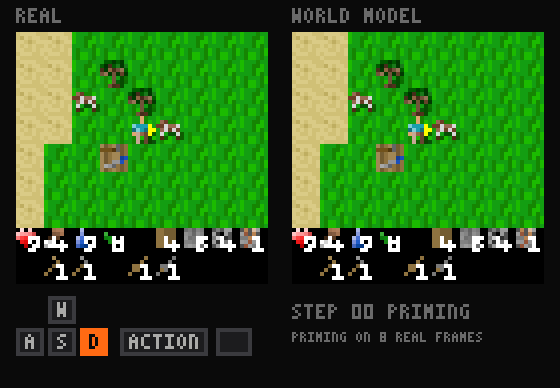

Train a world model in under 10 minutes for $0.1 of compute, and play it!
Point your agents at this autoresearch benchmark: train your own tiny world model on Craftax in under 10 minutes on one A100 and beat our best score!
Every frame below is generated by a neural network on your GPU, one keypress at a time. tinywmcraft is a 14M-parameter world model of Craftax, a 2D Minecraft, learned from scratch to predict pixels from previous pixels and keys alone.
autoresearch you can play
tinywmcraft democratizes autoresearch for something fun in ML. The models that come out of autoresearch benchmarks like nanochat or the nanoGPT speedrun usually go untouched once the score is in. Here you push the score down, and then you play with the model you made: walk around inside it, craft, fight, and see what it gets wrong.
the challenge
Get a diamond  inside the world model, or a score of 22, one for each achievement. In the player above, not in the real game. Save the clip, with the diamond in your inventory or the 22 on the score, and post it. The prize is to be discovered, maybe a paper copy of Sutton & Barto's Reinforcement Learning.
inside the world model, or a score of 22, one for each achievement. In the player above, not in the real game. Save the clip, with the diamond in your inventory or the 22 on the score, and post it. The prize is to be discovered, maybe a paper copy of Sutton & Barto's Reinforcement Learning.
No code and no GPU: this one is for everyone who doesn't feel like coding, or lacks even 30 minutes of A100.
how it works?
Craftax-Classic is a fast 2D take on Minecraft: walk, chop trees, craft, fight mobs, get a diamond  and stay alive! RL agents of mixed skill played 500k frame transitions of it, some of them all the way to iron tools and diamonds.
and stay alive! RL agents of mixed skill played 500k frame transitions of it, some of them all the way to iron tools and diamonds.
Then tinywmcraft learns a neural network world model of the game. Given a history of frames and an action, it generates the next frame, the reward and whether the episode ends. Feed its own frames back in and you can play inside it!
The model has 13.9M parameters: 5.2M in the tokenizer, 8.6M in the world model. A cold training run takes under 10 minutes on a single A100, about $0.1 of compute, and the eval 2 to 3 minutes more.

what there is to do
Craftax-Classic has 22 achievements. The first unlock of each is worth +1 reward, and the world model has to predict it from pixels: that is the +1 on the frame in the player. The score counts them.
Each arrow is a hard requirement in the game code. Tools are unlocks, not ingredients: a pickaxe lets you mine the next material. Iron tools need iron, coal, a furnace and a table nearby. The dim ones on the right can happen any time.
benchmark
Three snapshots of our own research so far, iterations 1 to 3. Lower gFVD is better. Beat iteration 3 with a pull request on GitHub and yours is iteration 4.
| # | author | change | gFVD ↓ | AF ↑ | reward AP ↑ | done AP ↑ | train s | code | weights |
|---|---|---|---|---|---|---|---|---|---|
| loading records.jsonl… | |||||||||
gFVD over all 64 generated frames, shown ×10⁴. Mean ± sample SD over training seeds 0, 1 and 2, each trained cold on one Colab A100 and scored by eval.py. Train s is the slowest seed. Data: records.jsonl.
the rules
Beat the best gFVD in one 600-second A100 run.
- data
train.npzon Hugging Face, 500k transitions. Nothing else, no pretrained weights.- compute
- 600 s on one A100 40GB, everything included: tokenizer, data loading, compilation. No compile cache.
- eval
eval.pyis frozen. Loading your model, compiling and generating 2048 clips of 64 frames must take at most 180 s on the maintainer's Colab A100. Any model and any sampler, as long as it generates one frame per action.- seeds
- The score is the mean over training seeds 0, 1 and 2.
- gates
- gFVD beats the best by a noise-aware margin. AF and reward AP stay above fixed floors, 95% of iteration 1; done AP is reported, not gated (deaths are rare: 142 clips). Ranked on gFVD alone.
To submit:
- Train seeds 0, 1 and 2 and score each with
eval.py. - Open a pull request with your code, the three ledger rows and links to the three checkpoints on Hugging Face.
- The maintainer reruns it next to the best. If it passes the gates, it is the next iteration, with your name on it.
The full rules and the model interface are in program.md, written for people and for coding agents.
inside the model
Tokenizer. A 63×63 frame and the one before it become a 4×4×32 latent. The 81 tiles of 7×7 pixels, from both frames, are tokens for six transformer blocks, then a stride-2 conv and four residual conv blocks. The decoder mirrors it, from the latent alone. Training mixes clean, half-masked and noised frames and always reconstructs the clean one.
World model. Six transformer blocks of width 256 alternate spatial attention over the 16 latent tokens with causal attention across 32 frames. The action, each frame's noise level and the sampler's step size condition adaLN-zero blocks. Flow matching predicts the clean latent, and eight Euler steps generate each frame.
Losses. Next to flow matching, a shortcut loss teaches one step to land where two half steps would, a temporal loss matches how the latents change from frame to frame, and late in training some context frames are swapped for the model's own predictions, so it learns to go on from an imperfect past.
Heads. A reward head (two-hot over 255 symlog bins) and a termination head read each frame's mean token, so the model returns frames, rewards and episode ends.
Optimizer. NorMuon, Muon with a learning rate adapted per neuron, on every matrix and conv kernel; AdamW on embeddings, biases and norms. Warmup, constant, then linear decay over the last 20% of steps.
Kernels. At width 256 a training step is bound by memory traffic, so attention, modulated norms, gated residuals and GELU run as fused Pallas kernels on NVIDIA GPUs, with an XLA fallback elsewhere.
Sampling. Spatial attention stays within a frame and temporal attention is causal, so the past frames' keys and values are computed once per new frame, and each Euler step runs only the new frame's 16 tokens. The player above does the same: about 7 GFLOP per keypress on WebGPU.
evaluation
The frozen evaluator scores 2048 clips from held-out episodes. Eight real frames prime the model, then it generates 64 frames open-loop from the recorded keys, one keypress at a time. 512 of the clips hold a rare event early on: a diamond, an iron pickaxe or sword, eating a plant, or a death in lava or by a zombie or skeleton. The eval takes 2 to 3 minutes on one A100.
gFVD ↓ (×10⁴), the headline, is the Fréchet distance between real and generated clips over all 64 generated frames, in the feature space of a fixed random CNN. It needs no external checkpoint and is not comparable to I3D FVD.
AF ↑ is action following: the share of clips where the true keys predict the salient pixels better than random keys, under the same context and noise. A model that ignores the keys scores 0.5.
reward AP ↑ and done AP ↑ are the average precision of the reward and episode-end heads on real transitions.

the whole model on one page
train_tiny.py, iteration 1, is the complete model in one file: tokenizer, world model, heads and training. About 250 lines, no custom kernels. Read it on screen or print it as a poster.
references
Craftax · Flow Matching · Diffusion Forcing · DiT · Dreamer 4 · Shortcut Models · Muon · NorMuon · FVD